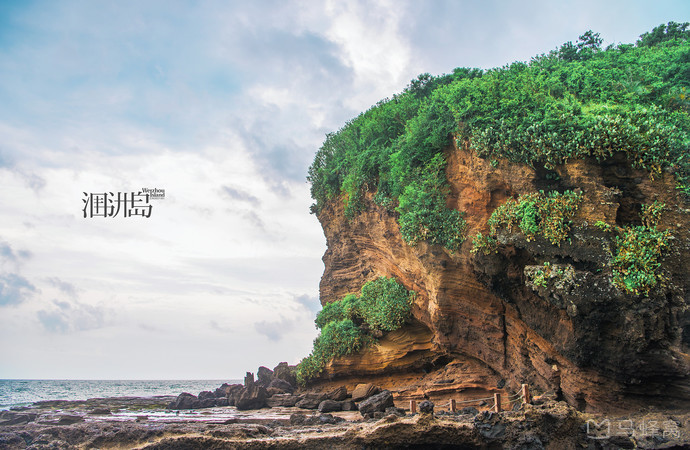

【地理位置及特点】北海市位于广西南部、北部湾东海岸， 位于东经108°50′45″～109°47′28″，北纬20°26′～21°55′34″之间， 全市南北跨度114公里，东西跨度93公里。境内有钦北铁路、209、325国道经过， 高速公路可直达南宁、玉林、湛江等地，把北海与桂林、重庆、成都、广州等重要城市连接起来， 构筑了中国西南地区便捷的公路出海通道。市政府所在地为海城区，距离自治区首府南宁市220公里。 北海开放历史悠久，文化底蕴深厚，是古代“海上丝绸之路”的重要始发港，是国家历史文化名城、 广西北部湾经济区重要组成城市。北海区位优势突出，地处华南经济圈、西南经济圈和东盟经济圈的结合部， 处于泛北部湾经济合作区域结合部的中心位置，是中国西部地区唯一列入全国首批14个进一步对外开放的沿海城市， 也是中国西部唯一同时拥有深水海港、全天候机场、高速铁路和高速公路的城市。北海旅游资源丰富， 生态环境优良，是享誉海内外的旅游休闲度假胜地。
【土地、气候】全市土地面积3337平方公里，森林面积13.4万公顷， 森林覆盖率达36.3%。北海三面环海，每立方厘米空气中的负离子含量高达2500至5000个， 享有中国最大的天然“氧吧”美誉。曾荣获“全国10个空气质量最好的城市”“中国十大休闲城市”称号， 两次获中国人居环境范例奖殊荣，2012年获评为“国家园林城市”。
【行政区划及人口】北海市辖海城区、银海区、铁山港区和合浦县， 23个乡镇、7个街道办事处、341个村委会、86个社区居委会， 全市户籍人口174.3万人。
海城区是北海市政治、经济、文化中心。辖区包括大陆区和海岛两大部分， 总面积141.24平方公里。管辖涠洲镇和高德、驿马、东街、中街、西街、海角、 地角7个街道办事处，19个村委会、45个社区居委会，总人口30.9万。
银海区辖4个镇：福成镇、平阳镇、侨港镇、银滩镇，40个村委会、8个社区居委会，总人口16.7万人。
铁山港区辖3个镇：南康镇、营盘镇、兴港镇，37个村委会、5个社区居委会，总人口18.5万人。
合浦县辖15个乡镇：廉州镇、党江镇、沙岗镇、西场镇、乌家镇、石湾镇、石康镇、常乐镇、闸口镇、公馆镇、白沙镇、山口镇、沙田镇、星岛湖镇、曲樟乡，245个村委会、28个社区居委会，总人口108.23万人。
【民族】北海市有壮族、瑶族、苗族、侗族、仫佬族、毛南族、回族、京族、彝族、水族、仡佬族、满族、蒙古族、土家族、朝鲜族、白族、傣族、高山族、藏族、黎族、达斡尔族、东乡族、维吾尔族等43个少数民族，少数民族常住人口近3.2万人，约占全市总人口的1.84%，人口在1000人以上的有壮族和瑶族。
【自然资源】重要的资源有：1、港口资源。北海港划分为：石步岭港区、铁山港西港区、铁山港东港区3个枢纽港区和海角港点、侨港港点、沙田港区、涠洲岛港区等小港点、小港区以及远景预留的大风江港区。规划港口岸线87.591公里,其中深水港口岸线72.29公里。截至2016年12月，全市正常营运的生产性码头泊位59个。其中万吨级以上泊位13个，万吨级以下泊位31个，1000吨级以下泊位15个。
2、淡水资源。现全市淡水资源总量32.27亿立方米，年可利用量达12.35亿立方米。
3、石油和天然气。北部湾是我国六大油气盆地之一。已探明石油储量2256万吨，天然气储量350亿立方米。其中，位于涠洲岛西南海区蕴藏着丰富的油气资源，含油气面积约3.8万平方公里，预测油气资源量22.59亿吨。
4、海洋资源。北部湾是我国四大渔场之一，主要鱼类500多种，持续资源量73万吨，最佳可捕量45万吨/年，虾蟹类230种，资源5206吨，可捕量3905吨。产量较大的有鱿鱼、墨鱼、石斑、虾类等。盛产珍珠，是著名的南珠故乡。
5、矿产资源。矿产资源有钛铁矿、高岭土、石英砂等，其中铁、钛矿储量达350万吨，已列入国家重点勘探项目。石英砂预测储量约3亿吨。
6、旅游资源。北海拥有“滨海、风光、人文、古迹”四大类旅游资源和“海水、海滩、海岛、海鲜、海珍、海底珊瑚、海洋动物、海上森林、海上航线、海洋文化”十大海洋旅游特色，集“海、滩、岛、湖、山、林”于一体，以滨海自然风光和以南珠文化为代表的人文景观兼备。目前，北海市拥有4A级景区9家，分别为：银滩国家旅游度假区、涠洲岛鳄鱼山景区、北海老城景区、金海湾红树林生态旅游区、北海园博园、北海汉闾文化园、海底世界、海洋之窗、嘉和•冠山海；此外还有3A级景区8家，以及星岛湖旅游度假区、“世外桃源”斜阳岛、冠头岭国家森林公园、山口国家级红树林自然保护区、儒艮（美人鱼）国家自然保护区等一批旅游景点景区。北海银滩东西绵延约24公里，具有“滩长平、沙细白、水温净、浪柔软、无鲨鱼”的特点，被誉为“天下第一滩”；涠洲岛是中国最年轻的火山岛，2005年被《中国国家地理》评为中国最美的十大海岛第二名，2016年入选国家海洋局评选的中国“十大美丽海岛”，受到了各级领导和游客的广泛关注，现正在全面加快整体开发步伐，加快建设国内一流、国际知名的休闲度假海岛。
耕地总面积124548.54公顷，其中水田48241.06公顷，旱地75807.76公顷。
地貌：地势从北向南倾斜，东北、西北为丘陵，南部沿海为台地和平原。市区海滨平原土地占总面积70%以上，土质由砂质粘土、砂砾构成，地层结构稳定，承压力强，一般为18—25吨/平方米。海洋滩涂约占市区土地总面积20%左右，土地耐力较低，为12—16吨/平方米。平均海拔10—15米。最高峰554米（五点梅），市区最高点120米（冠头岭）。
气候：属亚热带海洋性季风气候。年平均气温22.9℃，极端最高温度37.1℃，极端最低温度2℃。年平均降雨量1775.4毫米。年平均日照时数1940.9小时，年平均太阳总辐射5208兆焦耳/平方米。主要气象灾害是台风，历年系数2.9个。
石油、天然气：北部湾是我国六大油气盆地之一，已探明石油储量2256万吨，天然气储量350亿立方米。
矿产资源：石英砂矿已探明储量3000万吨，含二氧化硅98%以上；石膏矿已探明储量2.71亿吨，含硫酸钙70.97%(平均值);陶土已探明储量1.89亿吨，品位：三氧化二铝24～32%，二氧化硅52.5～64.8%；钛铁矿已探明储量126万吨，二氧化钛含量达52～60%。
海洋资源：海岸线东起与广东廉江县交界的英罗湾，西至与钦州市交界的大风江港，全长668.98公里（其中海岛岸线140.81公里），海滩涂500公里。北部湾渔场总面积16万平方公里，海洋鱼类500多种，虾类230种，持续资源量73万吨，最佳可捕量45万吨/年。海滩涂（潮间带）72.677万亩。浅海（0～10米水深）面积226.34万亩。可供养殖面积21万亩（其中水面8.73万亩）。海水平均盐度31%-32%，溴含量55～60ppm。
淡水资源：北海市境内河流属桂南沿海诸河水系，境内河流共有大小河流290多条，其中流域面积大于10 km2的河流有85条，河流总长1469公里。南流江是境内最大河流，流域集水面积9232km2，干流河长285km（其中本市境内河长100.4km）。境内产水资源总量32.27亿立方米，其中地表水资源量31.22亿立方米、地下水资源量8.26亿立方米，人均水量2182立方米，略低于全国人均2200立方米，低于全区人均3870立方米。入境水量71.93亿立方米，出海水量95.0亿立方米。现有39座水库（其中大型3座、中型4座），总库容量为20.68亿立方米。2015、2020、2030年水资源总量控制指标分别为12.12亿立方米、12.55亿立方米、12.79亿立方米。
港口资源：北海是古代“海上丝绸之路”的重要始发港，在历史上是云、贵、川、桂、湘、鄂等省与海外贸易的主要商品集散地之一，地理位置十分重要。
按2012年4月广西壮族自治区人民政府《关于北海港总体规划的批复》，北海港划分为：石步岭港区、铁山港西港区、铁山港东港区3个枢纽港区和海角港点、侨港港点、沙田港区、涠洲岛港区等小港点、小港区以及远景预留的大风江港区。规划港口岸线87.591公里,其中深水港口岸线72.29公里。截至2015年5月，全市正常营运的生产性码头泊位55个。其中万吨级以上泊位11个，万吨级以下泊位29个，1000吨级以下泊位15个。截至2014年12月，全年完成港口货物吞吐量2275.55万吨，集装箱9.6万标箱，外贸货物吞吐量999.74万吨，旅客吞吐量19.79万人。
旅游资源：北海地处亚热带，气候温暖湿润，空气清新，每立方厘米空气中的负离子含量高达2500～5000个，比内陆城市高出50—100倍；北海拥有“滨海、风光、人文、古迹”四大类旅游资源，有涠洲岛旅游区、北海银滩国家旅游度假区和星岛湖旅游度假区、百年骑楼老街、“世外桃源”斜阳岛、冠头岭国家森林公园、山口国家级红树林自然保护区、儒艮（美人鱼）国家自然保护区、海底世界、海洋之窗等一批一流的旅游景点景区。
亚热带综合资源：北海土地肥沃，阳光充足、雨量充沛，适合亚热带农、林、经济作物的种植，盛产粮食、花生、红黄麻、甘蔗、蚕桑等，是广西油料、黄红麻、糖业及蚕桑基地。具有丰富的森林资源，全市现有森林面积13.3万公顷；亚热带水果种类繁多，主要有柑桔、龙眼、荔枝、树菠萝、芒果、香蕉等。
北海产的珍珠称南珠，素以凝重结实、硕大圆润、晶莹夺目、光泽持久而驰名中外，自古享有“西珠不如东珠，东珠不如南珠”的盛誉。
沙虫：又名方格星虫，形状似根肠子，粗度一般为5─8毫米，长度一般5～10厘米。味道尤其鲜美，可鲜食、亦可晒干后食。 干制后炸、炒、炖、烩、煮汤均可。营养价值高，在市场上十分畅销。
海参：北海产的海参以花刺参为主。主要产地在涠洲岛。刺参营养丰富，久负盛名，远销国内外，是中国海产八珍之一。
文蛤：俗称“车螺”，是中国南海主要贝类资源之一。肉特别鲜嫩可口，汤、烩、炒食均可，含有较高的蛋白质。壳可药用。
日月贝：因左边贝壳为淡玫瑰红，右边贝壳为白色而得名。其肉圆形，扁状，名为“带子”，可鲜食，也可晒干食。营养价值极高，是珍贵的海产食品。
海蛇： 肉可食，营养丰富，味道鲜美，是高级食品。海蛇毒可治坐骨神经痛、风湿症等病。 儒艮：又称美人鱼，其实十分丑陋难看。俗称海牛，生活在合浦县沙田镇一带海域。
文昌鱼：属头索纲，文昌科。俗称扁担鱼，生产在沿海一带，通常钻在粗松的沙滩里，仅露出头部，全身无色透明、肌节明显，左右两侧扁，身体两头尖中间宽。在生物学上有很大的研究价值，又是海味珍品，被列为世界珍贵稀有动物之一。
中国鲎：属枝口纲，鲎科。境内沿海均产。它是由已绝迹的三叶虫演化而来，故人们称之为活化石。其血液含铜离子，可制鲎试剂，能快速、准确地检测人体内部组织是否有病菌感染；在制药和食品工业中，还可用它作毒素污染监测剂。鲎的肉和卵还是美味食品。
牡蛎：属双壳纲，牡蛎科，又名蚝，生长在西场镇沿海。肉味鲜美，营养丰富。壳可入药，有潜阳固涩、化痰软坚功能。用牡蛎可制成蚝豉蚝油，畅销国内外
乌贼：属头足纲，乌贼科。俗称墨鱼，境内沿海均产。营养价值高，每百克鲜肉中含蛋白质17克，脂肪1.7克，维生素A100国际单位， 还含有钙、磷、铁、核黄素等人体所需的物质。从其内脏中提取的内脏油是制革的原料之一。眼珠可制眼球胶，上等胶合剂。其骨中药名为海漂蛸，治溃疡、外伤、妇科病。乌贼干品远销国内外。
海马：属鱼纲，海龙科。又名龙落子，是珍贵药材，有健身、催产、消痛、强心、散结、消肿、舒筋活络、止咳平喘的功效。有“北方人参，南方海马”之说。
龙眼：龙眼是岭南佳果，合浦产的最著名。龙眼栽培起源甚早，汉时已有种植。元符三年（公元1100年），北宋大文学家苏东坡从廉州获赦北归。在廉州小住时，合浦郡守刘几仲即以合浦特产龙眼款待，苏东坡尝到龙眼时，赞不绝口，并即席赋《廉州龙眼质味殊绝可敌荔枝》一诗，他认为龙眼质味殊绝，可与荔枝相匹敌。由此可以证实，合浦龙眼生产、栽培有千年以上的历史。
香山鸡嘴荔：香山鸡嘴荔种遗落于此。但从树龄看，该树已有300 多年历史，1957年公馆一烈属曾将鸡嘴荔送给中央首长。香山鸡嘴荔属中熟品种，经空中压株植后三年结果，每年公馆香山鸡嘴荔，果实大（直径约5公分）、肉爽、核小如黄豆，味清甜可口，远近驰名。据说明代有一官员到石康县上任，路经公馆，将鸡四月开花，七月成熟。鸡嘴荔除生食外，可制荔干或罐头。
是国内罕见的集海蚀崖、海蚀平台、海蚀洞于一体的地质景观带。 景区内长达1.5公里的海岸几乎都发育着20-50米高的海蚀崖，崖面耸立，蔚为壮观。 退潮时的五彩滩，可以见到一层又一层的海蚀沟，在阳光的照耀下，十分漂亮。
盛塘天主教堂是典型法国文艺复兴时期的哥特式建筑，晚清四大天主教堂之一。 古老的教堂未经加工改建，建筑材料全取自岛上的珊瑚、岩石和石灰，显得很特别。 教堂外体仿佛看到20年代老上海的影子，一进去就有让人安静下来沉思的感觉。 周围的小巷还保留着涠洲岛最原生态的建筑及生活方式，可感受老涠洲岛的慢生活。
位于涠洲岛南湾西侧鳄鱼岭，距镇中心约4公里，在这里可看到最完整的火山活动遗迹。 景区内有鳄鱼山灯塔、火山口遗址、龙宫探奇、藏龟洞、海蚀拱桥、月亮湾、珊瑚沉积岩、月亮广场等。 还有火山弹冲击坑、古树化石、水帘洞、海蚀柱、海蚀墩等地质奇观，站在这里，不禁感叹大自然的神奇力量。 园内还有岛上的标志性建筑——灯塔，是渔民们的守护灯，登上塔顶的瞭望台，眺望蔚蓝无垠的海岸。
北海必游之地，滩面宽阔，沙质细柔洁白，被称为中国第一滩。 海水退潮快，涨潮慢，游泳安全系数很高，每年有9个多月可下水，无需担心鲨鱼出没。 在潮水刚退去的海滩漫步，甚至脚印也不会留下，只有细腻的白砂在阳光下泛着银光。 中部的海滩公园内的巨型不锈钢雕塑，拆除重建中。
北海老街始建于1883年，是一条有近二百年历史的老街，街道两旁是独具特色的中西合璧骑楼式建筑。 沿街分布着英、法、德领事馆旧址，德国森宝洋行旧址和天主教堂女修院旧址，见证了北海曾经的繁华。 如今这里变成了一条商业街，街上有药堂、酒肆、茶坊等，也可以吃到香辣花螺、虾饼、猪脚粉等当地美食。
冠头岭国家森林公园位于北海市最西端，由主峰望楼岭、风门岭、天马岭等组成。 主峰望楼岭海拔120米，是北海市区最高点，登上山顶可远眺周边海岸风光。 礁石滩上最有名的便是“海枯石烂”礁石龟，这是冠头岭的标志性景点。 同时，这里也是欣赏日出日落、万顷海涛和晚上点点渔火的迷人景色的好地方。
侨港海滩位于侨港镇渔港，与“天下第一滩”北海银滩毗邻，是我国南方的旅游胜地。 沙滩由石英砂堆积而成，沙质与银滩较之颜色稍暗，但不失细腻柔和。 侨港海滩滩面延绵约500米，一般非旺季时相对银滩来说人较少较安静。 这里的水上项目不是很多，但这一带的餐馆摊档多，价格也很实惠。
北海的海鲜品种主要有：龙虾、班节虾、花虾、弹虾、石斑鱼、鲳鱼、泥鯭鱼、彩衣、鱿鱼、墨鱼、八爪鱼、沙虫、泥丁、花蟹、青蟹、膏蟹、圣子螺、花甲螺、香螺、响螺、黄帝螺、油鳝、鲍鱼……而烹饪方法多样，蒸煮焖炒均可。海边人多喜欢吃清淡的，新鲜海鲜多以白灼，这样才能吃出原味，因此，喜欢吃原味的人可找当地渔民开的大排档，喜欢烹调的，推荐找具有一定规模的餐厅。一般北海较热门的饭店都可点海鲜， 若是专业做海鲜的店一般都偏贵，但所选的海鲜质量也较好。因此根据个人需求来选择吃海鲜的落脚点。 北海是一座海滨城市，品尝海鲜当然是不二选择，但在众多餐饮店中确实存在宰客问题。长期以来，出租车、三轮车与这些所谓的海鲜大排档餐饮店形成了紧密的利益链。现在吃海鲜建议不要在银滩那一带的所谓的海鲜大排档吃，不要偏信那些所谓的8 元/ 斤蟹、10 元/ 斤虾的招揽客人的排档（往往你必须点其他的鱼类、螺类，进行宰客）。主要有几处地方，如外沙、北部湾广场、地角等，在涠洲岛上吃海鲜也相较便宜。
似乎在海滨城市，烧烤并不鲜见，但都各有特色。北海海鲜烧烤店（街）白天是不经营的，每到傍晚时分摊主才开始摆出来。烧烤品种很丰富，可以说是五花八门，琳琅满目，让你有路过任何一家烧烤摊都想品尝一下的感觉。一般最出名的当数海鲜烧烤，不但价格便宜，品种繁多，仅螺类就有烤生蚝、烤青口螺、烤带子螺、烤鲍螺、烤厚皮螺、烤弯螺等等，还有烤鱼、烤鱿鱼、烤弹虾、烤明虾等。就连常吃的蔬菜也能烤着吃，韭菜被烤出来后，也被叫作“壮阳菜”成了有名的小吃。除了烧烤类的，炒花甲螺、炒竹节螺等也会让你吃后难忘。 除了海鲜烧烤外，比较火的品种还有烤鱼，是先把活鱼现挑、现杀，破开两半，上碳炉猛火烤成半干，刷油和调味料，文火慢烤，其间就向普通烧烤一样，刷上点盐水，烤到需要的程度时用铁盘放上开胃的配菜，将烤好的鱼放置其上，加料焖几分钟。然后放在已经燃好的碳炉上面就可以上桌了。再配上两瓶啤酒，就是一顿接地气的美餐。
喝糖水其实是两广的饮食习惯，也是两广的一大特色，在别的省份则很少见。而如今糖水已成了北海的代名词——各式各样的口味层出不穷，且常年人气不减，四季皆旺。因其价格低廉，尤其炎夏时来上一碗，清凉又解渴。 而要说喝糖水最火的地方自然要数侨港镇，人们在海边散完步经常会过来喝上一碗香甜的糖水。因此，到这里，和当地人一样，围坐在店里吃螺、喝糖水，才能真正融入当地，感受那份休闲。
据说是当地人从越南回来带回来的一种特色小吃，经过世代的变迁后更具北海特色，当然如果说正宗的话还要属越南的正宗。越南卷粉体积很小，要想吃饱，一定得吃上很多条，所以当地人一般把它当作早餐。当然，只想小试品尝一两条也是没问题的。 越南卷粉的原料是米粉，这种米粉是用米和水磨碎后制成的，然后放到蒸笼慢蒸一个小时即可出笼。里面可以根据个人的口味做成鸡蓉、鸡蛋、香菇、葱花、香菜等馅料，另外也可以抹上沙蟹汁、辣椒酱、酸甜酱等拌着吃，味道鲜美，口感润滑，非常好吃。
猪脚粉是北海的传统风味小吃，以猪脚做佐料而得名，香辣鲜爽。猪脚粉要采用精心挑选的猪前蹄，配以几十种名贵中药材熬制。这样熬熟的猪脚肥而不腻，脆而不硬，汤料经过特了调配，既保持原味有鲜美，价格实惠，吃起来别有一番风味。在北海，经营猪脚粉的小店很多，一般10-15元/碗，当地人会作为早餐下肚饱腹，开胃又精神。平时也可做午餐食用。